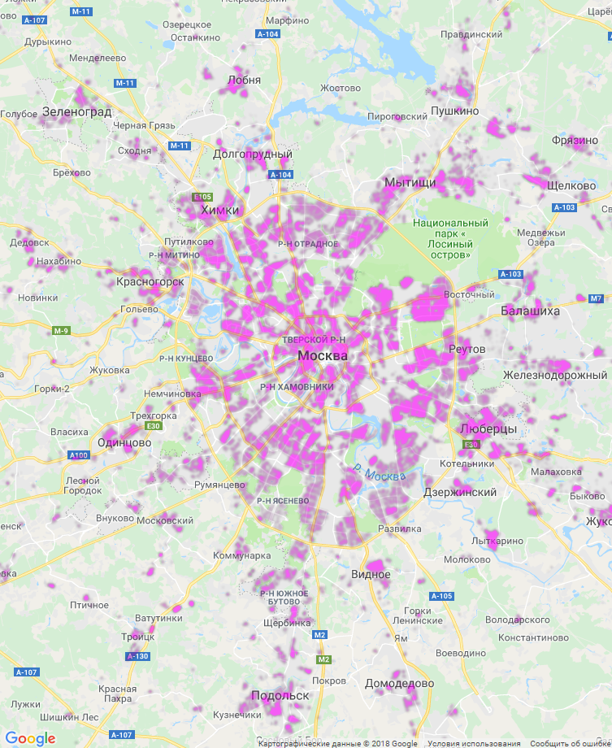

Путеводитель для бомжа, или как найти себе место
Многим людям рано или поздно приходится выбирать место для покупки или аренды жилья, или таки район для бродяжничества. Это исследование призвано помочь таким людям. Несмотря на юмористический заголовок, исследование серьезное, данные настоящие и можно надеяться на практическую пользу от их применения.
Итак, мы ищем себе место для жизни. Помимо всех факторов, на которые мы и так обращаем внимание при выборе - цена, транспортная доступность, наличие нужных нам объектов инфраструктуры поблизости - есть еще неуловимое нечто, отличающее благополучные места. Но что это, как это найти и измерить? И вот тут может оказаться полезной информация о звонках на номер 112, предоставленная компанией МТС в рамках соревнования по анализу данных. Вполне логично предположить, что в тех местах, где экстренные службы вызывают относительно редко - живут люди здоровые, законопослушные и противопожарные, и нам тоже хочется пополнить их счастливые ряды.
А где все?
Само по себе количество вызовов экстренных служб мало что говорит о благополучии района - в первую очередь оно зависит просто от среднего количества находящихся там людей, поэтому важно учесть это количество. Нас будут интересовать места с низким уровнем вызовов относительно плотности населения. Точной информации о плотности населения Москвы ни у кого нет, но мы можем приблизительно оценить ее, зная площадь жилой недвижимости в соответствующем районе. Возьмем соответствующие данные с сайта www.reformagkh.ru и отобразим на карте.

Оказывается, все это несметное количество людей умудряется размещаться на менее, чем половине площади Москвы - а бОльшую часть города занимают в основном лесопарки и промзоны.
Те же данные, но на карте, включащей ближнее Подмосковье:

Относительное спокойствие
Карты плотности населения интересны сами по себе, но мы пойдем дальше и разделим количество звонков внутри каждого квадрата 500x500 метров на плотность населения внутри этого квадрата. И получаем вот это:Чем темнее цвет, тем ниже относительное количество вызовов

Тут очень заметно практически полное отсутствие зон с низким относительным уровнем вызовов в самом центре. Связано это скорее всего не
с тем, что в центре людям плохо живется - а с тем, что люди там чаще не живут, а бывают по делам или ради развлечения. Есть кластер
благополучия в районе Университета, и в целом Юго-Запад выглядит чуть привлекательнее Северо-Запада. А вот просто Запад почему-то
отстает, даром что округ вполне престижный и дорогой. Ну и еще бросается в глаза то, что за пределами МКАД зоны с низким относительным уровнем
вызовов встречаются чаще. Поэтому снова посмотрим на ближайшие районы Московской области:
В области явного лидера не видно, но в целом север выглядит несколько лучше: Лобня, Долгопрудный, Химки. На юге выделяется знаменитое Южное Бутово, с которым вполне успешно соперничает обычно малозаметная Коммунарка.
Необъяснимое благополучие
Итак, мы составили некоторое представление о благополучных местах Москвы и области, руководствуюясь данными о количестве вызовов экстренных служб и плотности жилой застройки. Но все-таки плотность застройки - важный, но не единственный фактор, влияющий на количество людей, находящихся в районе. Давайте попробуем учесть как можно больше таких факторов одновременно и найти те районы, где уровень вызовов ниже при прочих равных. Для этого построим предсказательную модель, которая будет оценивать количество вызовов, исходя из наличия поблизости объектов разных типов (магазины, остановки транспорта, дороги, дома, парки,...), расстояния до центра города, совершаемых в районе банковских тразнакций и много чего еще. Будем при помощи этой модели предсказывать количество вызов и сравнивать с тем, что есть на самом деле. Те места, где вызовов существенно меньше, чем предсказывает модель - необъяснимо благополучные. Посмотрим на них:Выделяется опять район Университета, очень заметны Ясенево и Теплый стан. На северо-западе есть несколько кластеров относительно близко к центру, и довольно неожиданный мощный всплеск благополучия прямо возле МКАД в районе Лианозово.
Ну и, как обычно, посмотрим на область:

Необъяснимого благополучия в Лобне и Химках почти не осталось - видимо, уровень вызовов тут все-таки хорошо коррелирует с инфраструктурой. Зато это странное нечто, благодаря чему хорошо вопреки всему, вовсю проявилось в Красногорске, и чуть меньше - в Одинцово (южная часть), опять-таки Долгопрудном и Подольске.
Пытаться объяснить необъяснимое я не возьмусь, поэтому предлагаю просто принять как данность и руководствоваться при выборе жилья: в этих местах жизнь чуть лучше, чем кажется на первый взгляд.
На этом можно было бы поставить точку, но наши самые внимательные читатели возможно заметили, что для настоящего выбора тут кое-чего не хватает. Правильно - у последних карт нет второй половинки, ибо организаторы пока не выложили соответствующие данные. Без второй половинки выбор жилья получается однобоким, поэтому давайте надеяться, что организаторы предоставят ее после окончания соревнования.
А пока на этом все, спасибо за внимание.